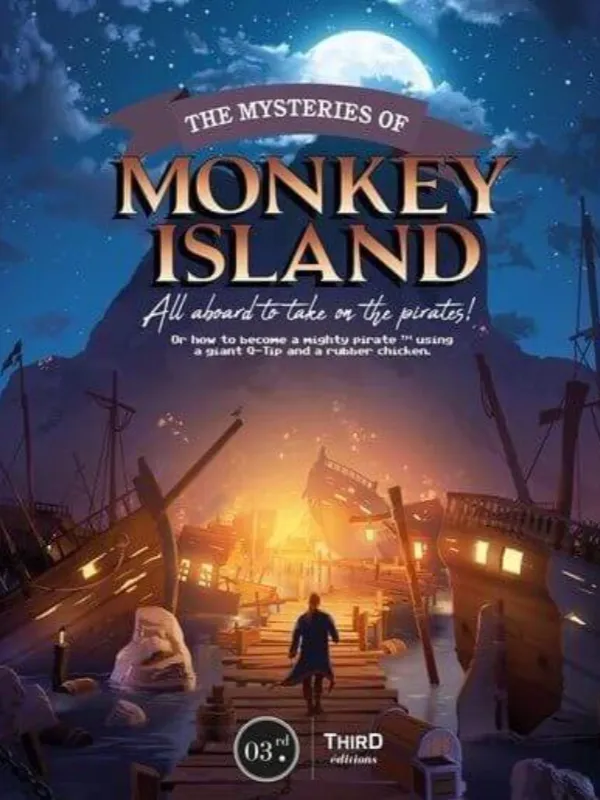

Projects
Here you'll find a selection of my projects — ranging from data‑driven web applications to creative and thematic websites. Each project highlights different aspects of my skills in web development, programming, and database management.
Treasures in the Nordic Forests
This project showcases my ability to build a clean and responsive frontend website. It is created using:
- Semantic and accessible HTML
- Custom CSS for layout and styling
- Bootstrap for responsive design
- JavaScript for interactive elements
- Deployment on GitHub Pages
A lightweight project that highlights modern UI design and core web development skills.
Visit the project View repository on GitHub
The secret of Monkey Island
This project demonstrates my ability to build a complete data‑driven web application. The site is built with Django and includes:
- A fully functional Python backend
- A PostgreSQL database
- Complete CRUD functionality
- User authentication
- Responsive design using HTML, CSS, and Bootstrap
- Deployment on Heroku
- A modern and user-friendly interface
A project that combines backend logic, structure, and modern web development practices.
Visit the project View repository on GitHubMore projects will be added over time as new work is completed. This portfolio is continuously growing, and I look forward to sharing more of my development journey soon.